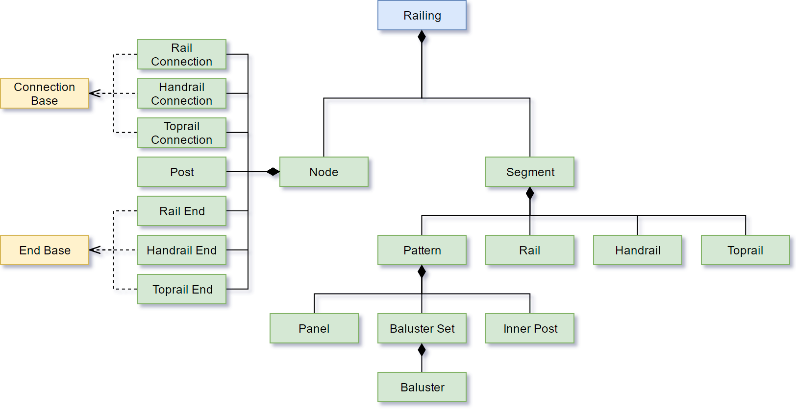

API_RailingType
Represents a Railing element.
typedef struct {
API_Elem_Head head;
API_LinkToSettings linkToSettings;
API_RailingNodeType defNode;
API_RailingSegmentType defSegment;
API_StoryVisibility visibility;
bool isAutoOnStoryVisibility;
bool filler_1[3];
UInt32 nVertices;
short referenceLinePen;
short contourPen;
UInt32 nNodes;
UInt32 nSegments;
UInt32 filler_2;
double bottomOffset;
} API_RailingType;
Members
- head
- General element header.
- linkToSettings
- The mode of linking to home story.
- defNode
- The default Railing Node element, from which the Railing Node instances will be generated.
- defSegment
- The default Railing Segment element, from which the Railing Segment instances will be generated.
- visibility
- The story visibility of the element. See API_StoryVisibility for details.
- isAutoOnStoryVisibility
- Recalculate the story visibility automatically according to the actual elevation of the railing.
- nVertices
- The amount of vertices in the Railing's reference line.
- referenceLinePen
- The pen index of the Railing's reference line.
- contourPen
- The pen index of the Railing's contour line.
- nNodes
- The amount of Nodes in the Railing.
- nSegments
- The amount of Segments in the Railing.
- bottomOffset
- TBase height of the Railing relative to the floor level.
Remarks
The Railing element is a complex structure of elements, requiring each subelement to be filled correctly.

Requirements
- Version: API 21 or later
- Header: APIdefs_Elements.h
See Also
API_Element, API_LinkToSettings,
API_RailingNodeType, API_RailingSegmentType,
API_StoryVisibility
Element Manager, API Types